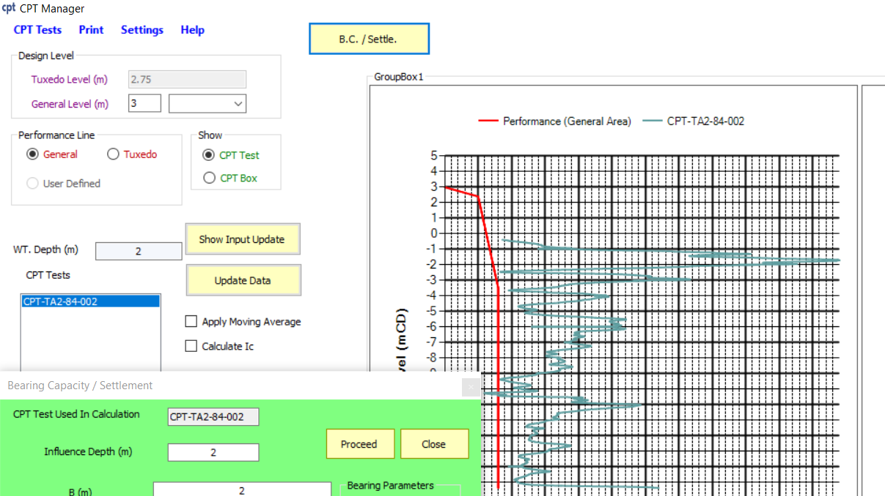

GeoDesign is developed to facilitate and expedite the designing process in geotechnical engineering. GeoDesign has four principal modules; data input, soil parameters calculation, calculation of bearing capacity and corresponding settlement, and finally, the results output. The input data is composed of two parts; soil profile, and footing geometry.
GeoDesign compute bearing capacity and settlement of soil layers. The bearing capacity is calculated according to Hansen and Terzaghi, and the settlement according to Schmertmann and Burland.
Download GeoDesign v.4 for free (integrated in Excel)
CPT Manager software has been designed to handle an infinite quantity of CPT tests. It has the capability to compare these tests against project specifications, implement Moving Average techniques, forecast soil types, and compute bearing capacity.
Projects Tracking helps the user plan, organize, and track your projects, it's apoweful tool that lets managers measure the progress of their team as they execute tasks and use resources. This software is designed to be used in soil laboratories.
The Dynamic Programming algorithm is utilized within FLAC2D to search for the most favorable failure surface.